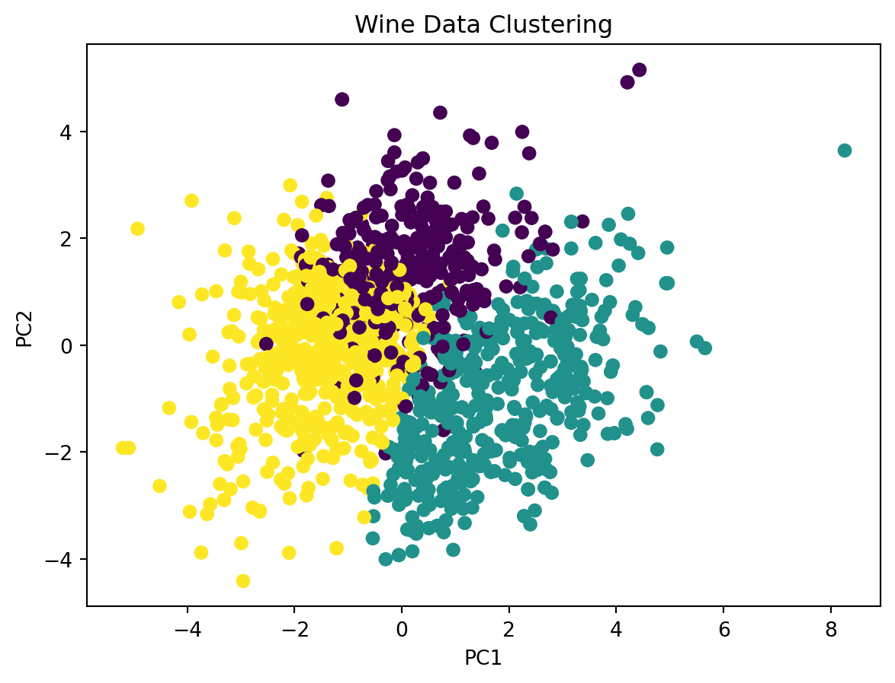

Code
import pandas as pd
from sklearn.cluster import KMeans
from sklearn.preprocessing import StandardScaler
from sklearn.decomposition import PCA
from matplotlib import pyplot as pltAishwarya
November 27, 2023
In the realm of machine learning, clustering stands as an unsupervised learning technique, tasked with uncovering hidden patterns and groupings within data. It’s like an explorer venturing into uncharted territory, seeking to identify communities amidst a sea of unlabeled observations. Imagine a vast collection of customer data, each record representing an individual’s purchasing behavior. Clustering algorithms, like adept detectives, can sift through this data, discerning distinct groups of customers with similar purchasing patterns. This newfound knowledge can empower businesses to tailor marketing campaigns and product offerings to specific customer segments, enhancing customer satisfaction and profitability.
A Glimpse into the World of Wine
For this exploration, we’ll delve into the world of wine, using a dataset that contains measurements of various chemical and sensory properties of different wine types. Our goal is to uncover hidden patterns in this data and understand how these patterns relate to the quality of the wine.
Step 1: Data Loading - Gathering the Essentials
Our journey begins with loading the wine dataset into our Python environment. This involves utilizing the pandas library, a powerful tool for data manipulation and analysis. With the data securely in hand, we can proceed to extract the relevant features, the chemical and sensory properties that will serve as the basis for our clustering analysis.
<class 'pandas.core.frame.DataFrame'>
RangeIndex: 1599 entries, 0 to 1598
Data columns (total 12 columns):
# Column Non-Null Count Dtype
--- ------ -------------- -----
0 fixed acidity 1599 non-null float64
1 volatile acidity 1599 non-null float64
2 citric acid 1599 non-null float64
3 residual sugar 1599 non-null float64
4 chlorides 1599 non-null float64
5 free sulfur dioxide 1599 non-null float64
6 total sulfur dioxide 1599 non-null float64
7 density 1599 non-null float64
8 pH 1599 non-null float64
9 sulphates 1599 non-null float64
10 alcohol 1599 non-null float64
11 quality 1599 non-null int64
dtypes: float64(11), int64(1)
memory usage: 150.0 KBStep 2: Feature Extraction - Selecting the Relevant Pieces
The wine dataset contains a wealth of information, but not all of it is relevant to our clustering task. We carefully select the features that are most likely to contribute to meaningful groupings, such as alcohol content, acidity levels, and residual sugar content. These features will represent each wine sample in our analysis.
Step 3: Data Preprocessing - Preparing for the Algorithm
Before we can unleash the clustering algorithm, we need to ensure that our data is in a suitable format. This involves a process called standardization, where we scale the features to a similar range. This step is crucial as it prevents any single feature from dominating the clustering process.
Step 4: KMeans Model Creation - Unveiling the Clusters
Now we introduce the K-means algorithm, our chosen tool for uncovering hidden patterns in the wine data. K-means is a partitioning-based clustering algorithm that works by iteratively assigning data points to clusters based on their proximity to cluster centroids. The number of clusters, known as ‘k’, is a crucial parameter that determines the granularity of the clustering. In our case, we set k to three, corresponding to the expected number of wine types in the dataset.
Step 5: Model Fitting - Assigning Cluster Labels
With the K-means model ready, we fit it to our preprocessed data. This involves iteratively updating the cluster centroids and assigning data points to the nearest centroid until convergence is reached. As a result, each data point is assigned a cluster label, indicating its membership in one of the three identified groups.
C:\Users\aishw\AppData\Local\Programs\Python\Python39\lib\site-packages\sklearn\cluster\_kmeans.py:1416: FutureWarning:
The default value of `n_init` will change from 10 to 'auto' in 1.4. Set the value of `n_init` explicitly to suppress the warning
KMeans(n_clusters=3)In a Jupyter environment, please rerun this cell to show the HTML representation or trust the notebook.
KMeans(n_clusters=3)
Step 6: Cluster Prediction - Identifying Cluster Membership
Once the model is fitted, we can predict the cluster labels for any new wine sample. This allows us to classify new wines into the existing groupings, providing insights into their characteristics and potential quality.
Step 7: Cluster Evaluation - Assessing the Algorithm’s Performance
To evaluate the effectiveness of our clustering, we employ the silhouette score, a metric that measures the separation and compactness of clusters. A higher silhouette score indicates better clustering, with values ranging from -1 to 1.
# Step 7: Cluster Evaluation - Assessing the Algorithm's Performance
# Evaluate the clustering performance using silhouette score
from sklearn.metrics import silhouette_score
silhouette_avg = silhouette_score(features, cluster_labels, sample_size=len(features))
print("Silhouette score:", silhouette_avg)Silhouette score: 0.06178140210994517Step 8: Visualization - Bringing Clusters to Life
To gain a visual understanding of the clusters, we utilize Principal Component Analysis (PCA) to reduce the dimensionality of the data from 11 features to 2 dimensions. This allows us to plot the data points in a 2D scatter plot, where different colors represent different clusters.
# Step 8: Visualization - Bringing Clusters to Life
# Visualize the clusters using PCA and 2D scatter plot
pca = PCA(n_components=2)
pca_data = pca.fit_transform(standardized_data)
plt.scatter(pca_data[:, 0], pca_data[:, 1], c=cluster_labels)
plt.title("Wine Data Clustering")
plt.xlabel("PC1")
plt.ylabel("PC2")
plt.show()
---
title: "Unraveling the Mysteries of Data: A Journey into Clustering with Python"
author: "Aishwarya"
date: "2023-11-27"
categories: [clustering]
format:
html:
code-fold: true
code-tools: true
jupyter: python3
---
In the realm of machine learning, clustering stands as an unsupervised learning technique, tasked with uncovering hidden patterns and groupings within data. It's like an explorer venturing into uncharted territory, seeking to identify communities amidst a sea of unlabeled observations. Imagine a vast collection of customer data, each record representing an individual's purchasing behavior. Clustering algorithms, like adept detectives, can sift through this data, discerning distinct groups of customers with similar purchasing patterns. This newfound knowledge can empower businesses to tailor marketing campaigns and product offerings to specific customer segments, enhancing customer satisfaction and profitability.
**A Glimpse into the World of Wine**
For this exploration, we'll delve into the world of wine, using a dataset that contains measurements of various chemical and sensory properties of different wine types. Our goal is to uncover hidden patterns in this data and understand how these patterns relate to the quality of the wine.
```{python}
import pandas as pd
from sklearn.cluster import KMeans
from sklearn.preprocessing import StandardScaler
from sklearn.decomposition import PCA
from matplotlib import pyplot as plt
```
**Step 1: Data Loading - Gathering the Essentials**
Our journey begins with loading the wine dataset into our Python environment. This involves utilizing the pandas library, a powerful tool for data manipulation and analysis. With the data securely in hand, we can proceed to extract the relevant features, the chemical and sensory properties that will serve as the basis for our clustering analysis.
```{python}
data = pd.read_csv('C:/Users/aishw/Desktop/Kuma/posts/welcome/winequality-red.csv')
data.head(3)
data.info()
```
**Step 2: Feature Extraction - Selecting the Relevant Pieces**
The wine dataset contains a wealth of information, but not all of it is relevant to our clustering task. We carefully select the features that are most likely to contribute to meaningful groupings, such as alcohol content, acidity levels, and residual sugar content. These features will represent each wine sample in our analysis.
```{python}
# Step 2: Feature Extraction - Selecting the Relevant Pieces
features = data[['fixed acidity', 'volatile acidity', 'citric acid', 'residual sugar', 'chlorides', 'free sulfur dioxide', 'total sulfur dioxide', 'density', 'pH', 'sulphates', 'alcohol', 'quality']]
```
**Step 3: Data Preprocessing - Preparing for the Algorithm**
Before we can unleash the clustering algorithm, we need to ensure that our data is in a suitable format. This involves a process called standardization, where we scale the features to a similar range. This step is crucial as it prevents any single feature from dominating the clustering process.
```{python}
# Step 3: Data Preprocessing - Preparing for the Algorithm
scaler = StandardScaler()
standardized_data = scaler.fit_transform(features)
```
**Step 4: KMeans Model Creation - Unveiling the Clusters**
Now we introduce the K-means algorithm, our chosen tool for uncovering hidden patterns in the wine data. K-means is a partitioning-based clustering algorithm that works by iteratively assigning data points to clusters based on their proximity to cluster centroids. The number of clusters, known as 'k', is a crucial parameter that determines the granularity of the clustering. In our case, we set k to three, corresponding to the expected number of wine types in the dataset.
```{python}
# Step 4: KMeans Model Creation - Unveiling the Clusters
# Create the KMeans model and specify the number of clusters (3, matching the number of wine types)
kmeans = KMeans(n_clusters=3)
```
**Step 5: Model Fitting - Assigning Cluster Labels**
With the K-means model ready, we fit it to our preprocessed data. This involves iteratively updating the cluster centroids and assigning data points to the nearest centroid until convergence is reached. As a result, each data point is assigned a cluster label, indicating its membership in one of the three identified groups.
```{python}
# Step 5: Model Fitting - Assigning Cluster Labels
# Fit the model to the data
kmeans.fit(standardized_data)
```
**Step 6: Cluster Prediction - Identifying Cluster Membership**
Once the model is fitted, we can predict the cluster labels for any new wine sample. This allows us to classify new wines into the existing groupings, providing insights into their characteristics and potential quality.
```{python}
# Step 6: Cluster Prediction - Identifying Cluster Membership
# Predict the cluster labels for each data point
cluster_labels = kmeans.predict(standardized_data)
```
**Step 7: Cluster Evaluation - Assessing the Algorithm's Performance**
To evaluate the effectiveness of our clustering, we employ the silhouette score, a metric that measures the separation and compactness of clusters. A higher silhouette score indicates better clustering, with values ranging from -1 to 1.
```{python}
# Step 7: Cluster Evaluation - Assessing the Algorithm's Performance
# Evaluate the clustering performance using silhouette score
from sklearn.metrics import silhouette_score
silhouette_avg = silhouette_score(features, cluster_labels, sample_size=len(features))
print("Silhouette score:", silhouette_avg)
```
**Step 8: Visualization - Bringing Clusters to Life**
To gain a visual understanding of the clusters, we utilize Principal Component Analysis (PCA) to reduce the dimensionality of the data from 11 features to 2 dimensions. This allows us to plot the data points in a 2D scatter plot, where different colors represent different clusters.
```{python}
# Step 8: Visualization - Bringing Clusters to Life
# Visualize the clusters using PCA and 2D scatter plot
pca = PCA(n_components=2)
pca_data = pca.fit_transform(standardized_data)
plt.scatter(pca_data[:, 0], pca_data[:, 1], c=cluster_labels)
plt.title("Wine Data Clustering")
plt.xlabel("PC1")
plt.ylabel("PC2")
plt.show()
```